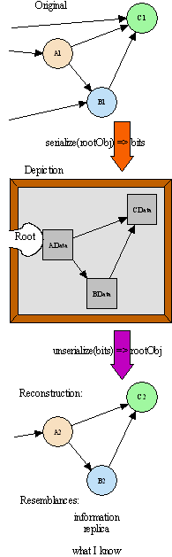
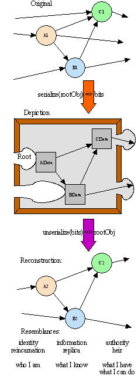

| |
Safe
Serialization Under Mutual Suspicion |
||||||
Safe Serialization Under Mutual Suspicion
by Mark S. Miller
Abstract
Serialization and object-capabilities [ref Ode, Paradigm] are two extensions of the object paradigm that seem to pull in opposing directions. Serialization sees an object graph as apparently open data, to convert to bits and back again. The object-capability paradigm sees an object graph as a set of dynamically evolving relationships between mutually suspicious encapsulated autonomous objects, voluntarily cooperating with one another each to pursue their own interests, within limits set by their vulnerability to and trust in each other [ref Hewitt].
Serialization is often used to extend the reach of the object model across barriers of space, time, and version; stitching local ephemeral object systems together into a virtual graph of distributed persistent upgradable objects. With serialization we create the illusion of object continuity by adapting to these changes of context. There are many kinds of change and no single adequate adaptation strategy, so we seek general mechanisms supporting a diversity of coexisting adaptation policies.
Likewise, serialization is often used to extend the object-capability model across such barriers. By enhancing the illusion to include capability security properties, we create a virtual persistent graph of mutually suspicious objects spread over mutually suspicious machines. Mechanism / policy separation is also needed here, though if too much authority is needed to express a policy choice, few objects will be able to, and little actual policy diversity will occur.
While there is a long history of distributed capability protocols that meet all these goals [ref Donnelley76, Sansom86/88, Actors?, Amoeba?], prior persistent capability systems have always granted their persistence service godlike authority over the subsystem it is persisting, leading to single mandated one-size-fits-all solutions [ref KeyKOS, EROS, PJama, Grasshopper, Mach, Waterken?, Mozart?]. By contrast, this paper explains a simple serialization framework able to stretch the full object-capability illusion across all these barriers, able to express a wide range of policies, and requiring only reasonable authority. A diversity of policies may coexist within one system, each able to deal sensibly with mutual suspicion issues
- among objects being serialized,
- between these objects and a serializer,
- between a serializer and an unserializer,
- between an unserializer and its context,
- between an unserialzer and the objects it reconstructs, and
- among the reconstructed objects.
For concreteness, we sketch how these ideas are applied in E, a pure object-capability-based secure programming language, thereby turning it into a securely distributed, persistent, and upgradable language as well.
Introduction
Serialization vs. Security?
In the pure object model of computation, an object is an encapsulated combination of state and behavior, where the state consists of references to other objects. The computational system is the dynamic graph of objects held together by these references, and rewired by messages sent along these references.
| A note on terminology: Since 1966 [ref Dennis and Van Horn] the object-capability model has been known simply as the capability model. Unfortunately, some other very different models are also called "capabilities", so we introduce the term object-capability [ref Wagner, Paradigm] to escape from this legacy of confusion. |
The object-capability model of secure computation recognizes the security inherent in the object model. To get from objects to object-capabilities, we need merely prohibit certain primitive abilities which are not part of the pure object model anyway (like forged pointers, direct access to another's private state, mutable static variables) but which the object model by itself doesn't require us to prohibit [ref Ode]. For example, C++, with its ability to cast ints into pointers, is still an object language, but is not an object-capability language.
Whereas the functionality of an object program depends only on the abilities provided by its underlying system, the security of an object-capability program depends on underlying inabilities as well. In a graph of mutually suspicious objects, one object's correctness depends not only on what the rules of the game say it can do, but also on what the rules say its potential adversaries cannot do. By imposing the object-capability prohibitions, we give the object model new power and meaning. Object-capability computation is no longer just the manipulation of information, but also of secure authority and identity. The object graph becomes a fabric for arranging patterns of safe cooperation among mutually suspicious objects.
Within the pure object model, because of encapsulation, objects cannot perceive or operate on the graph they are embedded in -- they have access only to the behavior (in response to messages) of their immediate graph-neighbors -- but not to their neighbors' state. This limited access is adequate for many purposes, but, it would seem, not all. Serialization, explained below, is an example of a tool for use by objects within an object system for operating on the graph they are embedded in. This seems to require violating the encapsulation provided by the pure object model. Given the conventional rationale for encapsulation -- that it aids only modularity -- one could argue that it is simply prudent engineering to add new primitives for violating encapsulation when needed, as a tradeoff for other benefits. Many object systems provide serialization in precisely this way [ref JOSS, Mozart?].
Threats and Opportunities
|
To encourage anthropomorphism, this paper often gives objects human names such as "Alice". Unless we explicitly state we're referring to humans, these always refer to objects. |
But adding such primitives destroys the security properties inherent in the pure object model. These are exactly the kinds of additions the object-capability model must prohibit. For example, they might allow Mallet, a client of encapsulated Alice, to serialize Alice and then reverse engineer the values of her private instance variables from her serialized form.
This paper shows how to provide the rough equivalent of conventional serialization for use in object-capability systems. This shift of context gives us both new problems to solve and new opportunities to exploit:
-
Play by the rules. We show how to serialize and unserialize purely within object-capability rules, without introducing new primitives or requiring undue authority, thereby guaranteeing that we preserve base level (pre-illusion) object-capability security.
-
Adapting authority and identity. Our serialization framework enables us to manipulate secure authority and identity in addition to information, enabling adaptation to changes involving these issues as well.
-
Ensure accuracy of claimed authority. By object-capability rules, our serializer can only ask Mallet to voluntarily divulge that information he alleges about himself -- his portrayal. If Mallet could convincingly portray himself as having authority he doesn't, the corresponding unserializer could be fooled into granting his reconstruction corresponding authority in its new context. Such a serialization system fails to enforce object-capability rules within the illusion it's attempting to create. We explain how to render this attack inexpressible.
-
Selective transparency. Our serializer can only interact with Alice by sending messages to her public interface, just like any of Alice's other clients. Our serializer can only serialize Alice if she offers her portrayal in response -- if she doesn't, she's not serializable by this serializer. But if she does, what prevents Alice's client Mallet from asking these same question and obtaining this same portrayal, rendering Alice effectively unencapsulated? We show how a serializer and a set of objects may exploit a prior relationship of some additional trust, so that these object may divulge to this serializer portrayals of itself it wouldn't divulge to other clients or serializers.
-
Invoke no object before its time. As with many objects, during Alice's construction / initialization, she may be in a fragile and easily confused state. Under normal conditions this is easily addressed -- don't give Mallet a reference to Alice until she is fully initialized. As programmers, we carefully design the order of object construction to get such issues right. However, during unserialization, object reconstruction does not have this luxury -- the order is often determined by the happenstance of the original graph's traversal. In the absence of cycles we could always reconstruct in bottom up order, but cycles are not absent.
But if Mallet's reconstruction (Mallet2) is given access to a not-yet-fully-initialized reconstruction of Alice (Alice2), Mallet2 may exploit Alice2's confusability. The defensive programming needed for Alice2 to be unconfusable is surprisingly hard -- we may not raise the price for security this high. Instead, we explain how to prevent this attack in those systems supporting delayed references (e.g., promises, logic variables, futures). For other systems, we know of no good solution other than to simulate delayed references. Unfortunately, our technique will occasionally cause valid cyclic serializations to fail to unserialize. Fortunately, the defensive programming needed to overcome this problem, though unpleasant, is straightforward. (** Need to explain that most of this problem is universal, though typically unadmitted.)
Serialization vs. ParallelismSerialization raises concurrency problems -- what if the graph changes while the serializer is traversing it. Although not the topic of this paper, within E we have easy answers: E is a system of communicating event loops. Each event loop is identified with a vat -- essentially an address space full of objects together with a single thread of control for servicing the event loop. Objects only have synchronous access to other objects within their own vat. Inter-vat interactions only queue message deliveries to be serviced eventually in their own event. Therefore, during each event, each object runs with exclusive access to everything it has synchronous access to. We assume that each act of serializing and unserializing occurs during a single event, and therefore only traverses objects within the same vat. In the absence of malice, this provides adequate atomicity. (For systems like Java, built on shared memory multithreading with fine-grained locking, it's hard to imagine any correct general way to address this issue.) However, objects visited early in a traversal can react by causing side effects to shared parts of the graph that are revisited later in the same traversal. Given a normal degree of defensive programming, it's hard to imagine what vulnerability an attacker may find in this issue, but we would be remiss not to raise the possibility. Applications should also arrange to initiate serialization and unserialization at the beginning of an event, as is easily done. Between events there's no stack, so the heap must be consistent by itself. During an event, only the call stack + the heap can be assumed to be fully consistent, but our serialization tools are only able to examine state in the heap. |
What We Have Not Done
The present work does not address the following issues:
-
The serializer is able to steal authorities. Using the architecture we present, the serializer obtains direct access to each object it traverses, which it can use, if it wishes, for other purposes. By the goals set out in this paper this represents inexcusably excess authority, as the serializer's proper duties include only the gathering of information from these objects [ref Karp, KeyKOS Sensory]. This is a pressing area for future work. Reducing the authority made available to the serializer reduces the risks it imposes on others, enabling them to more often chose to participate in a serialization in which they place limited trust.
-
Performance. The speed achieved by high performance serialization systems [ref Parcels] may be incompatible with the architecture presented here. However, most serialization systems, such as JOSS, are unable to achieve such high performance either. While we know of no flaw in the present design that would preclude the performance achieved by these more common serialization systems, no such engineering has been done, and the question is mostly unexamined.
-
Dirty bits & in-place stubifying. In order to use serialization to build an object-oriented virtual memory system [ref Loom] or object database, for each subgraph that would be separately saved and faulted back in we would need dirty bits to know if it changed. To unload a subgraph (purge it from memory), we would need to turn incoming references (references into the subgraph from outside it) into references to faulting stubs. While we believe that such techniques and those presented in this paper are compatible and complementary, this question is also mostly unexamined.
-
Denial of service. Just as E makes no attempts or claims to resist denial of service attacks within a vat, so our serialization tools likewise do nothing to resist a denial of service attack from within a subgraph. If Mallet or his reconstruction simply throws an exception when traversed, this will abort the traversal preventing that act of serialization or unserialization. The E approach is to prevent breach attacks (inappropriate acquisition or exercise of authority) at the fine granularity of individual objects, as we do here, but to defend against resource exhaustion and denial of service attacks only at the coarser granularity of vats. Is there a corresponding coarser grain for serialization, at which such questions should be addressed? We don't know.
-
Typed serialization. E itself is a dynamically typed language, in the tradition of Smalltalk, Actors, Lisp, or Python. The serialized form used in this paper, Data-E, is a subset of E and is equally untyped. Serialization systems for statically typed object languages like Java generally leverage the existence of static type declarations. One serialization system for Java (the XMLEncoder [ref]) outputs the equivalent of typed Java programs as its serialization format, providing an existence proof of a sort. Do the techniques presented here combine smoothly with static types? One known problem is the unserialization of cycles -- our technique of using delayed references will more often cause unserialization to fail, simply because a delayed references momentarily violates a declared type. A possible solution may be a type system designed to accommodate delayed references. (Note that XML Schema are inapplicable to typed serialization, since declared types constrain all references in the graph, whereas XML schema only constrains a tree.)
What is Serialization?
|  |
Figure 1:
|
The Literal Realism diagram on the left represents the common elements of serialization and unserialization. A serializer (shown as the serialize function) takes as input a graph of live original objects, where this graph is a subgraph, delimited somehow, of an overall object graph. A serializer builds a depiction (shown in the picture frame) of this subgraph in a format it expects a compatible unserializer to understand. The depiction contains no objects; only bits depicting objects.
(Never mind that objects themselves are implemented using only bits. This view from the implementation isn't available to the objects so implemented -- and must not be -- so we may ignore it for present purposes. By contrast, the depiction consists only of bits, not just in fact, but also as perceived by the objects wielding our serialization tools.)
An unserializer takes this depiction as input, and uses it to build a new graph of live objects that can, in some sense, be said to be a reconstruction of the original. The reconstructed objects may or may not resemble the original in a number of different ways, explained below. The reconstructed graph is connected, somehow, into the overall graph at this new context, becoming a subgraph of it. When performed in service of, for example, distributing, persisting, or upgrading objects, the serializer, unserializer, original, and reconstructed objects generally cooperate to create the illusion that the reconstructed objects are a continuation -- across space, time, versions, etc. -- of the original objects.
Literal Realism
Within the overall notion of serialization, there are many variations. The following explanation of serialization in Mozart [Duchier98] expresses well the extreme we call literal realism.
|
|
Let x be the original data structure and y be a clone of x. Then the graphs reachable from x and y must be graph isomorphic with respect to their roots x and y. Moreover, the [mutable?] cells reachable from x must all be different from the [mutable?] cells reachable from y. |
(We are not claiming that actual support for customizing serialization in Mozart is limited in this manner, just that these are the limits implied by the cited spec.)
In this system, in terms of the diagram on the left, the subgraph to be depicted would be all objects reachable from the root object, A1. Non-root incoming references on the left, such as the incoming references to B1 and C1, would not be depicted. Serialization would not cut off any outgoing references on the right. There would be exactly one entry -- the root -- and no exits. A graph containing an unserializable object, such as an open TCP socket, simply cannot be serialized. Unserializing connects the reconstructed subgraph to its new context only at the root. Besides the root, the reconstructed subgraph is completely isolated. Holding no references to anything outside itself, it has no authority to affect anything outside itself. Literal realism of objects must also record and reload code, as a reconstruction must act just like the original.
Literal realism makes for a very clean spec. Unfortunately, it lacks the adaptability we need to create illusions of continuity across many kinds of changes. It also conflicts with the normal constraints of object-capability programming, in which an object's behavior in response to messages is the most that may be ascertained about it.
Society of Impressionists
In the object paradigm, objects have no direct access to one another's state. For example, when Alice asks Richard the Rectangle for his height (r.getHeight()), she cannot tell, and should not care, whether the answer is part of Richard's state or is computed. All she knows is that she's received the answer Richard wishes to divulge.
To build a serialization system for unprivileged use, it is best to build the serialization system without use of special privileges, thereby forcing it to play by the same rules imposed on all other objects. Within these constraints Literal Realism isn't possible. Literal Realism would require the depiction to reflect the actual state, whereas object constraints limit us to depicting a composition of what each object portrays its state to be. (*** note exception: Auditors) The subgraph the serializer is able to perceive is not the real subgraph of objects in memory, but rather a kind of story spun by the objects being traversed, each for its own purposes.
In this view, represented well by Java's Object Serialization Streams (JOSS) [ref JOSS], a serialization system is a framework for customizing, and for composing customizations of, the processes of depiction and reconstruction. We expect both serialization and unserialization to proceed with the intention that the reconstructed graph be somehow meaningfully similar to the original, but with differences as needed in order to satisfy other goals.
The unserializer builds whatever new objects it likes (subject to the limits of what objects it can build), but it normally chooses to build along the lines of its interpretation of the intentions of the serializer, as recorded in the depiction. The serializer paints whatever depiction it wishes (subject to the limits of what knowledge it can gain), but it normally chooses to depict along the lines of each original object's expressed intentions of how and whether it would like to be portrayed. Each object portrays that its alleged instance variables -- the set of references it would have the serializer represent as its state and further traverse from there -- is any set of references it likes (subject to the limits of what references it can produce).
(*** Find quote from "I Pencil")
Modern civilization has given man undreamt of powers
largely because,
without understanding it, he has developed methods of utilizing
more knowledge and resources than any one mind is aware of.
--Friedrich Hayek [Hayek78]
When all these expressions of intent reflect the code written by one programmer all at once, then they are all aspects of one underlying intent and the architecture for composing intentions may not matter so much. When they are written by different programmers at different times in different companies, all with little knowledge of each other's specifics, then an architecture should be well adapted to the expected locality of knowledge -- demanding from each component the expression of intent which that component is in a better position to contribute. It should compose these together into a result which successfully utilizes more knowledge than any one component plausibly has. JOSS does quite well at this. The Data-E architecture presented below does similarly well for similar reasons -- partially as a result of thinking about and learning from JOSS.
As with many object frameworks translated into an object-capability world, a serialization framework is a system for composing knowledge by the rule-based mixing of intentions expressed by mutually suspicious interests. When these all seek only literal accuracy (the default behavior), and when all the objects to be depicted are transparent (defined below), then the result must be according to Literal Realism. Given this, we can explain the effects of each kind of customization in terms of how it causes the result to deviate from Literal Realism, and of how multiple customizations interact.
A Model of Serialization
In the next chapter of the paper, Deconstructing Serialization Part 1: Introducing Data-E and Part 2: "Reversing" Evaluation, sets the stage for the remainder of the paper by explaining one concrete serialization system, the Data-E System, designed for expository use in this paper. The depiction format used by the Data-E System, Data-E, is a small subset of the E language. Unserialization in the Data-E System is equivalent to the corresponding subset of E expression evaluation [ref Rees]. This choice enables us to immediately understand the meaning of a depiction by applying our understanding of expressions. This technique can easily be applied to many languages [ref XMLEncoder].
This initial presentation of Data-E will show it living within the constraints of capability discipline, but without yet showing how to live well within those constraints. The resulting loss of power compared to conventional serialization will be repaired in the chapters which follow.
Data-E will be presented in terms of its implementation in E for use in E, although Data-E is in no sense specific to E.
Although the ideas in this chapter are mostly specific to Data-E, the ideas in the remainder of the paper are not. They have also been applied to JOSS, and we expect to apply them to Waterken Object Serialization (WOS) [ref WOS] as well. They should be applicable in any object-capability language [ref W7, Mozart, M] and starting from any sufficiently customizable serialization mechanism [ref JOSS, XMLEncoder?, WOS, BOSS?], given that it has the crucial property that portrayals are only in terms of other objects, as explained later.
|  |
Figure 2:
|
The Three Faces of Serialization
To serialize a subgraph of an overall graph, we need to delimit the bounds of the subgraph. Both serialization and unserialization raise issues that can naturally be classified according to the three columnar aspects of the diagram, which we explain in right-to-left order: the exits, the interior, and the entries.
The Exit Points
The right edge represents outgoing references -- references from objects within the subgraph to objects outside it (references leaving A1, B1, and C1). Of these, the ones depicted -- shown crossing the frame as convex jigsaw puzzle plugs -- are exits (references leaving B and C), which the unserializer is expected to reconnect to something appropriate. (Following JOSS, we call outgoing references that aren't depicted, such as the one leaving A1, transient.)
In an object-capability system, an object's only source of authority to affect the world outside of itself is according to the references it holds. By composition, the only authority held by the original subgraph as a whole to affect the world outside that subgraph is according to these outgoing references. To reconnect the exits to corresponding sources of authority is to determine what objects within the reconstructed subgraph can initially do. To the extent that the new authorities resemble the original, we can say the objects holding these reconnected exit references are heir to these authorities from their original.
A reconstructed subgraph may find itself in a world quite different than the original's. Individual original objects held access to various resources of their hosting platform, and may expect to be reconnected to corresponding resources on their new host.
For example, let's say the original Joe held write access to /etc/motd. What criteria should come to play to determine what corresponding resource on the new platform to give to the reconstructed Joe? The chapter Manipulating Authority at the Exits presents the Gordian Surgeon as the mechanism, and the legal concept of Comity Among Nations [ref??] as the metaphor for guiding policy choices, for the security issues of reconnecting exits.
The Interior Subgraph
The interior of the picture represents the subgraph itself (A,B,C and the references among them). To reconstruct the subgraph is to replicate information from the original, determining what the reconstructed objects initially know. To the extent that information represented by a reconstructed object resembles information represented by the original, we may say the reconstructed object is a replica of the original.
The chapter Selective Transparency within the Subgraph enhances our idealized model of serialization to regain much of the lost conventional power while remaining within capability discipline. Within capability discipline, the serializer is only able to obtain knowledge of the original subgraph to the extent that the objects within that graph are willing to divulge that knowledge. This chapter shows a rights-amplification pattern by which a serializer may prearrange a relationship with set of objects, enabling these objects to divulge more to that serializer than they are willing to divulge to their normal clients or to other serializers.
The Entry Points:
Transcending Space and Time
The left edge of the picture represents the incoming references -- references into the subgraph from objects outside the subgraph. Of these, the ones depicted -- shown crossing the frame as concave jigsaw puzzle sockets -- are entries, those incoming connections the unserializer is expected to reconnect to something appropriate.
In any object system, the meaning of identity is in the behavior of references. To be a particular identity is to be designated by a particular reference, and thereby to be able to receive those messages (invocations) sent on that reference. In the object model, the philosophy of identity is simple: If I alone receive all communications directed to Joe, then I am Joe. In the object-capability model, the exclusive right to receive messages sent to Joe is the right to be Joe. When a reconstructed object acquires and employs this right from an original, we say it is a reincarnation of the original.
In a conventional single-process non-distributed, non-persistent object system (a space-time-local system), reincarnation is not really needed. Indeed, in a sense to be explained, it is not even possible. But we often stretch such systems across space and time by building distributed persistent object systems on top of such conventional systems. For example, the JVM itself only provides a space-time-local system, but RMI is built mostly in Java to stretch Java references across space. A number of persistence mechanisms (EJB, JDO) have been built mostly in Java to stretch Java objects and references across time. E is layered in this way, but in E, the distributed persistent object system must still be a secure object-capability system. When building this layer of infrastructure, reincarnation is both possible and necessary.
The chapter Manipulating Identity at the Entries first explains the cryptographic implementation of distributed identity in E's remote messaging protocol, CapTP. We then show a simple use of cryptographic hashing that securely allows a new object to become the object designated by all outstanding references to the original. With a further elaboration on the hashing theme, we then enable unprivileged fault handlers to delay the act of unserializing and reincarnating from saved depictions until needed to handle incoming requests.
Transcending Change: Upgrade
The art of upgrade is to preserve state amid change
and to enable change amid state.
--with apologies to Alfred North Whitehead 1
An object is a bundle of state and behavior. Conventionally, an object's state may be mutable, but not its code. Like a dog that can't learn new tricks, an object conventionally has the same behavior for the duration of its lifetime. Once persistence extends this lifetime well beyond the product release cycles of the programs run by these objects, this inability can become an intolerable problem. To repair this, we must at least deal with the schema evolution problem -- to convert the concrete representation of the objects to a correct representation compatible with the new code that most closely preserves their original meaning and preserves their assumptions about each other. But schema evolution can be hard. To succeed at complex upgrades of complex systems at reasonable cost, a system should be designed to avoid schema evolution where possible, so that the programmers can afford to invest the attention needed to get it right in the remaining places where it's necessary [ref Arturo].
The chapter Persistence and Upgrade explains how these mechanism have been employed to create user-level persistence in E, and how these mechanisms support persistence-with-upgrade by schema-evolution-avoidance in addition to schema evolution.
Other Approaches
The chapter Related Work surveys other work on serialization and security: Mozart. JOSS. WOS. XMLEncoder. ***What else? The origins of the Gordian Surgeon at Kalieda and NeXT. Abstraction in ToonTalk. Rights amplification for accessing representation: The KeyKOS / EROS Brand. PJama and XOF. Cardelli, Vijay. Rees' uneval. State Bundles
Unless stated otherwise, all text on this page which is either unattributed or by Mark S. Miller is hereby placed in the public domain.
| |
|
report bug (including invalid html)
|
||||||||